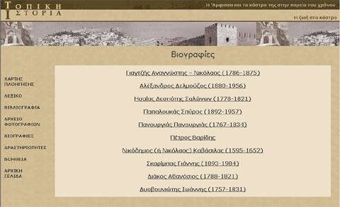
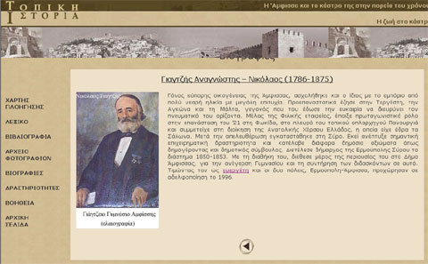

| Εγχειρίδιο Χρήσης |
5.6 ΒιογραφίεςΤο εργαλείο αυτό βρίσκεται στην πρώτη και δεύτερη ενότητα. Περιέχει τις βιογραφίες που βρίσκονται στην ενότητα. Αρχικά εμφανίζεται μία οθόνη με τον κατάλογο των βιογραφιών, που υπάρχουν στην ενότητα.  Εικόνα 5.6.1 Βιογραφίες - Κατάλογος Κάνοντας κλικ σε ένα όνομα ο χρήστης μεταφέρεται στην αντίστοιχη βιογραφία. Για να επιστρέψει στην αρχική οθόνη, μπορεί να κάνει κλικ στο αντίστοιχο κουμπί επιστροφής.  Εικόνα 5.6.2 Βιογραφίες Εικόνα 5.6.3 Κουμπί Επιστροφής |